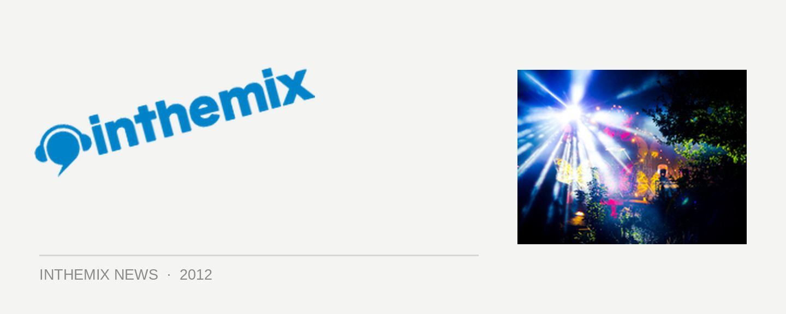

Photo report: Mysteryland returns to Holland
One of the world’s longest-running dance events Mysteryland returned to Holland over the weekend, with 60,000 punters flocking to the grassy fields and rolling hills of the Voormalig Floriade just outside of Amsterdam. Living up to ID&T’s legendary reputation for building immersive fantasy lands, the Dutch also showed they’re among the best in the world when it comes to partying, as well as equally legendary ability to not let soggy weather get in the way of having a good time (in the same weekend when flooding shut down Creamfields in the UK).
Mysteryland proved itself one of the classiest events in the world on Saturday, with its nearly 20-year history reflected in a true genuine of heritage, with the ages of the punters stretching from their early 20s, right up to even their 50s and 60s, with many of them in attendance since the very first events in the 90s. It’s definitely one of the most ‘adult’ large-scale events in the world.
Sprawling over a massive distance that hosted over 15 different stages, the party catered to the big-room house sounds of Avicii, Calvin Harris and Fedde Le Grand in the Big Top tent, the bombastic sounds of the Dirty Dutch tent that hosted Chuckie and Porter Robinson, to the absolutely huge Q-Dance stage, which sported the most spectacular setup for the whole day and most likely the largest crowd, showing how much the Dutch love their hardstyle.
For the many in the crowd with a more refined taste for house and techno, there was also plenty to choose from – the colourful open-air Monade stage boasted another one of the most elaborate setups, with performers like Loco Dice and Simian Mobile Disco leading the charge, the Electric Deluxe brought the techno with names like Jeff Mills and Speedy J, while the Back X Back pirate ship stage on the water saw some truly impressive partnerships like Hernan Cattaneo and Eelke Kleijn, and Anton Pieete with Surgeon.
Stay tuned for ITM’s full Mysteryland review, and check out some of the first round of photos from across the epic day.